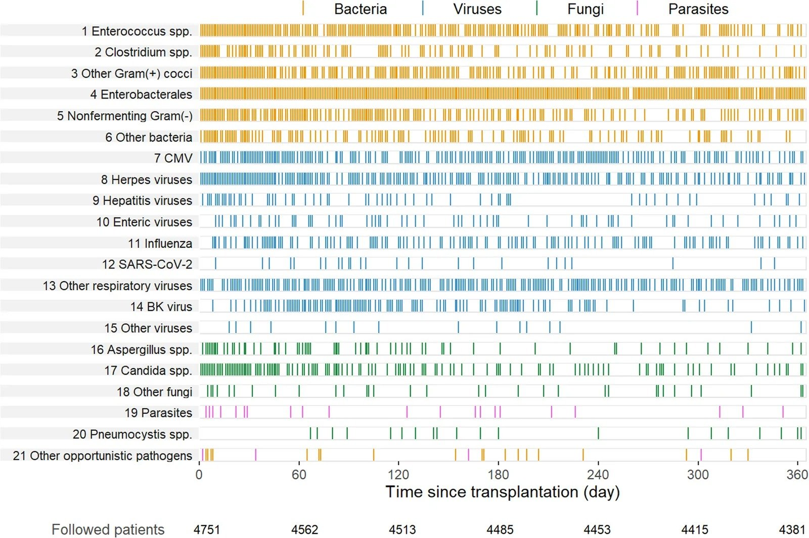
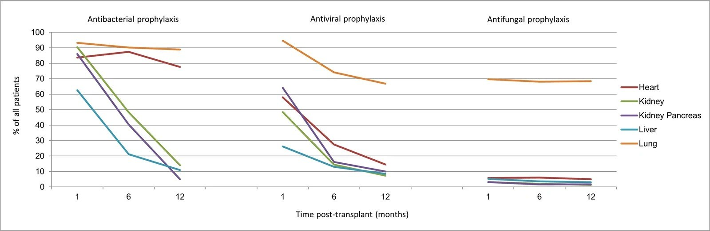
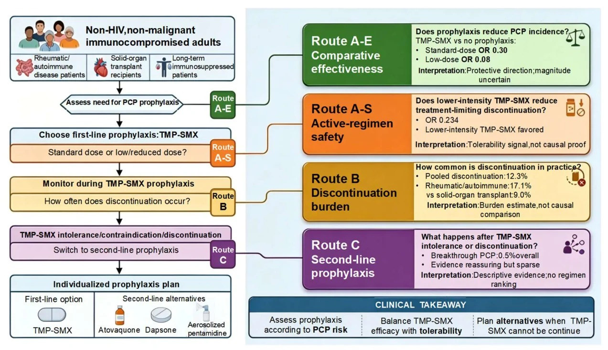
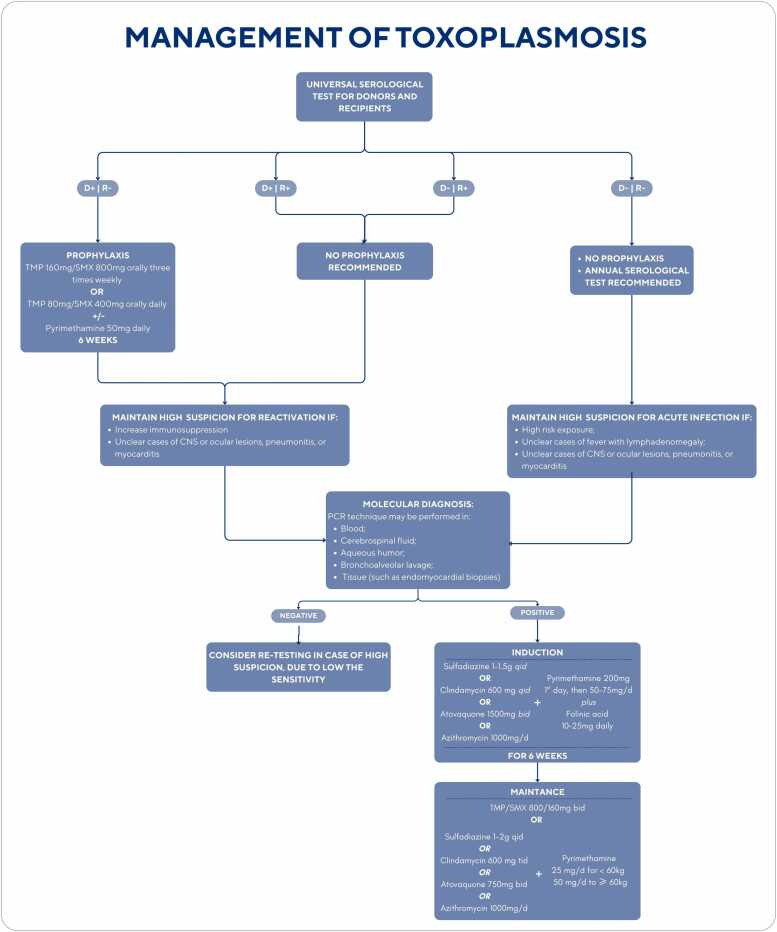

1980 — Dự phòng nhiễm trùng cơ hội sau ghép tạng: PJP – CMV – toxoplasma, lịch và khi nào ngừng / Opportunistic infection prophylaxis after solid organ transplant
Tags: pattern:kinh-mo pattern:nuot-ky-sinh pattern:ton-thuong-da-nganh vung:phoi vung:o-bung protocol:PCR-multiplex protocol:BDG incidentaloma:khong
Mức chắc chắn (certainty): tổng hợp y văn (literature synthesis) — 1 đoàn hệ quốc gia 4.751 người ghép (Curr Infect Dis Rep 2026, PMC13653959, CC BY), 1 phân tích gộp mạng lưới về dự phòng PJP (J Fungi 2026, PMC13514556, CC BY), 1 tổng quan về CMV ở người ghép thận (PMC13697321, CC BY-NC-ND) và 1 tổng quan về toxoplasma ở người ghép tim (JHLT Open 2026, PMC12799946, CC BY-NC-ND). Nhóm không có bệnh nhân của mình. Chỗ nguồn không nêu rõ (thời gian dự phòng ở nhóm D+/R−) được ghi là "chưa rõ — cần tra guideline gốc", không suy diễn.
Câu chốt: sau ghép tạng, nguy cơ nhiễm trùng thay đổi theo mốc thời gian vì thuốc ức chế miễn dịch mạnh nhất trong 1–6 tháng đầu; dự phòng phải đặt đúng cửa sổ chứ không phải "cho kháng sinh chung". Ba số phải thuộc: (1) trong đoàn hệ 4.751 người ghép, 27% bị nhiễm trùng trong tháng đầu, 33% từ 1–6 tháng, 23% từ 6–12 tháng — tức nguy cơ không biến mất khi ra viện (PMC13653959); (2) dự phòng PJP bằng TMP-SMX giảm PJP rõ rệt (OR 0,30 với liều chuẩn, OR 0,08 với liều thấp) nhưng 12,3% người dùng phải ngừng vì tác dụng phụ — ở người ghép tạng là 9,0% (PMC13514556); (3) ở người ghép tim D+/R− cho toxoplasma, không dự phòng thì nguy cơ lây từ 57–75%, và có dự phòng thì hầu như không còn ca hoạt hóa — dự phòng có thể phải suốt đời (PMC12799946).
1. Tổng quan bệnh học – cơ chế hình ảnh
1.1 Vì sao "lịch" quan trọng hơn "loại kháng sinh"
- Sau ghép, trạng thái ức chế miễn dịch ròng (net state of immunosuppression) thay đổi theo thời gian: cao nhất 1–6 tháng đầu (liều ức chế cao, thiếu hụt tế bào T, giảm bạch cầu do thuốc), rồi giảm dần nhưng tăng vọt mỗi khi điều trị thải ghép/thay đổi thuốc.
- Vì vậy mỗi tác nhân có cửa sổ riêng: vi khuẩn ngoại sinh 24–72 giờ quanh mổ; CMV tập trung 1–6 tháng; PJP có thể muộn hơn, sau khi đã ngừng dự phòng; toxoplasma ở người ghép tim D+/R− có thể bùng phát muộn và cần dự phòng dài.
- Đoàn hệ Thụy Sĩ (4.751 người ghép: 383 tim, 1.121 gan, 488 phổi, 2.646 thận, 113 thận–tụy) ghi 5.389 nhiễm trùng lâm sàng trong năm đầu: 27% bệnh nhân nhiễm trong tháng 1 (11,95 ca/1.000 ngày–ghép), 33% từ tháng 1–6 (3,88/1.000), 23% từ tháng 6–12 (2,02/1.000); vi khuẩn chiếm ~60% tổng số nhiễm (PMC13653959).
- Điều trị thải ghép làm "mở lại" cửa sổ: nhiễm PJP và CMV muộn xuất hiện sau khi đã ngừng dự phòng, thường sau các đợt tăng ức chế miễn dịch (PMC13653959). Đây là lý do dự phòng phải bật lại khi có biến cố, không chỉ tính theo tháng.
1.2 Ba tác nhân, ba cơ chế hình ảnh
| Tác nhân | Cơ chế tổn thương | Hình ảnh chính | Số liệu định lượng |
|---|---|---|---|
| PJP (Pneumocystis jirovecii) | Vi nấm bám phế nang, gây viêm phổi kẽ–phế nang với dịch protein trong lòng phế nang (không phải mủ đặc) | Kính mờ hai bên, ưu thế rốn phổi/perihilar, dày kẽ dạng lưới, nang khí (pneumatocele) ở 10–30%; CT có thể âm tính sớm | Dự phòng ≥ 6–12 tháng sau ghép (AST, dẫn trong PMC13514556); 12,3% ngừng TMP-SMX vì tác dụng phụ (chung), 9,0% ở người ghép tạng (PMC13514556) |
| CMV | Virus họ Herpes, lây qua mô ghép/bạch cầu; ức chế miễn dịch → nhân lên trong nội mô, gây viêm phổi, viêm gan, viêm dạ dày–ruột, viêm võng mạc | Kính mờ + nốt nhỏ + đông đặc; viêm phổi CMV không đặc hiệu, phải PCR/DNAemia | Không dự phòng: nhiễm 60%, bệnh 56% trong 3 tháng (PMC13697321); dự phòng bắt đầu 7–10 ngày sau ghép, kéo dài 3–6 tháng (PMC13697321); 25% vẫn nhiễm dù có dự phòng (PMC13697321) |
| Toxoplasma (T. gondii) | Ký sinh trùng nội bào, tạo nang bradyzoite trong cơ tim/dây thần kinh; ở người ghép tim, nang nằm ngay trong mô ghép | Viêm não: nhiều ổ ngấm thuốc hình vòng ở hạch nền, phù; viêm cơ tim, viêm phổi kẽ; chẩn đoán bằng PCR dịch não tủy/máu | D+/R− không dự phòng: lây 57–75%; dự phòng TMP-SMX 160/800 ba lần/tuần hoặc 80/400 mỗi ngày; nhiều guideline khuyến cáo suốt đời ở D+/R− (PMC12799946) |
1.3 TẠI SAO TMP-SMX phòng được cả ba — và vì sao không phải "một liều cho tất cả"
- TMP-SMX ức chế hai bước liên tiếp trong tổng hợp folate của vi khuẩn/đơn bào: dihydropteroate synthase (SMX) và dihydrofolate reductase (TMP). PJP và Toxoplasma đều không tự tổng hợp purin nên phụ thuộc folate → nhạy cảm. Đây là lý do một thuốc phủ được 2 tác nhân, và cũng phủ Nocardia, Listeria một phần.
- Liều "chuẩn" và "thấp" khác nhau về độc tính, không khác nhiều về hiệu quả: phân tích gộp mạng lưới cho thấy cả liều chuẩn (OR 0,30; KTC 95% 0,18–0,48) và liều thấp (OR 0,08; 0,03–0,18) đều giảm PJP so với không dự phòng, trong khi liều thấp ít phải ngừng hơn (OR 0,234; 0,145–0,377) (PMC13514556). Vì vậy ở người không dung nạp, giảm liều là một lựa chọn có bằng chứng, không phải "bỏ dự phòng".
- "Dự phòng" không đồng nghĩa "không cần chẩn đoán": CMV có thể nhiễm đột phá (25% dù dự phòng — PMC13697321); PJP muộn sau khi ngừng; toxoplasma có thể lây dù đã dự phòng không đủ liều. Triệu chứng + PCR vẫn là chuẩn.
2. Mẫu hình + chẩn đoán phân biệt theo vị trí (gamut)
- Phổi (kính mờ hai bên): PJP (kính mờ đối xứng rốn phổi + dày kẽ + nang khí), CMV (kính mờ + nốt nhỏ + đông đặc, có thể một bên), RSV/cúm (tree-in-bud, dày thành phế quản), Aspergillus (nốt + dấu quầng), nhiễm Nocardia (nốt/đông đặc + áp-xe não), phù phổi (dịch khe, tim to), xuất huyết phế nang (kính mờ + ho ra máu).
- Não (nhiều ổ ngấm thuốc): toxoplasma (nhiều ổ vòng ở hạch nền, thường không quá 3 cm), lymphoma nguyên phát CNS (một/nhiều ổ, ngấm đồng nhất, hạn chế khuếch tán mạnh), áp-xe nấm (Aspergillus, Mucor), PML (BK/ JC — không ngấm thuốc, chất trắng dưới vỏ), CMV encephalitis (quanh não thất), di căn.
- Đường tiêu hóa: CMV (loét nông, dày thành, có thể thủng), C. difficile, EBV–PTLD (khối/dày thành), Mycobacterium (loét, hạch mạc treo).
- Mắt: CMV retinitis (xuất huyết + hoại tử dạng "pizza pie" ở người ghép hiếm hơn AIDS nhưng mù nhanh), toxoplasma retinochoroiditis (ổ hoại tử trắng cạnh sẹo cũ).
- Bối cảnh quyết định tên gọi: cùng "kính mờ hai bên", cửa sổ 1–6 tháng sau ghép + suy giảm lympho → PJP/CMV; sau khi tăng ức chế miễn dịch → PJP muộn; người ghép tim D+/R− → toxoplasma. Không có bối cảnh thì chỉ là "viêm phổi" — không được gọi tên tác nhân.
3. Bảng so sánh phân biệt (ma trận đối chiếu)
| Thực thể (entity) | Hình ảnh / xét nghiệm điển hình | Chốt vào (rule-in) | Chốt loại (rule-out) | Gợi ý xác nhận |
|---|---|---|---|---|
| PJP | Kính mờ hai bên ưu thế rốn phổi + dày kẽ; BDG huyết thanh tăng; LDH tăng | Kính mờ đối xứng + BDG dương + PCR/BAL dương | CT bình thường không loại trừ ở người suy giảm miễn dịch nhẹ; BDG âm giảm mạnh khả năng PJP | PCR P. jirovecii trên BAL; BDG; không cần hình ảnh để bắt đầu điều trị khi lâm sàng nặng |
| CMV | Kính mờ + nốt nhỏ + đông đặc; PCR CMV máu (DNAemia); soi đáy mắt | DNAemia dương + tổn thương cơ quan phù hợp (viêm phổi/gan/ruột) | PCR âm không loại trừ CMV ở mô (sinh thiết); IgM không dùng để chẩn đoán bệnh | PCR định lượng + nội soi/sinh thiết; soi đáy mắt |
| Toxoplasma | Nhiều ổ vòng ở hạch nền trên MRI; PCR dịch não tủy; tổn thương cơ tim trên MRI tim | IgG D+/R− + tổn thương não nhiều ổ + PCR dương | Ổ đơn độc > 3 cm, ngấm đồng nhất, hạn chế khuếch tán mạnh → nghĩ lymphoma hơn | PCR máu/DNT; MRI não; sinh thiết não khi không đáp ứng 10–14 ngày |
| Nhiễm Nocardia | Nốt/đông đặc phổi + áp-xe não; Gram dương dạng sợi phân nhánh | Nốt phổi + áp-xe não + cấy Nocardia | Không có tổn thương não và cấy âm → ít nghĩ | Cấy mẫu bệnh phẩm, PCR 16S; hình ảnh não |
| Phù phổi / xuất huyết phế nang | Kính mờ + dịch khe + tim to hoặc ho ra máu | Đáp ứng lợi tiểu nhanh (phù) hoặc Hct giảm + hình mờ đậm (xuất huyết) | Kính mờ dai dẳng không đáp ứng lợi tiểu → không phải phù đơn thuần | Siêu âm tim, BNP; BAL có hemosiderin |
| PTLD (EBV) | Khối/dày thành ruột, hạch, ngấm thuốc đồng nhất, có thể trong mô ghép | EBV DNA cao + khối + mô bệnh tăng sinh lympho | Không có EBV DNA và mô bệnh lành → không phải PTLD | Sinh thiết + EBV DNA + PET/CT |
4. Protocol chụp + hệ phân độ/điểm chuẩn hóa
4.1 Chọn chiến lược dự phòng (flowchart)
flowchart TD
A["Bệnh nhân chuẩn bị ghép tạng"] --> B["Xét nghiệm trước ghép: CMV IgG, Toxoplasma IgG, EBV, HBV, HCV, lao"]
B --> C{"Nguy cơ CMV: D+/R− ?"}
C -->|"Có"| D["Dự phòng phổ quát bằng valganciclovir, khởi đầu 7–10 ngày sau ghép"]
C -->|"Không"| E{"R+ hoặc nguy cơ trung bình?"}
E -->|"Có"| F["Chọn dự phòng phổ quát HOẶC theo dõi tiền phát (preemptive) bằng PCR định kỳ"]
E -->|"Không"| G["Theo dõi PCR theo lịch, không dự phòng thường quy"]
D --> H["PJP: TMP-SMX ít nhất 6–12 tháng"]
F --> H
G --> H
H --> I{"Ghép tim và Toxoplasma D+/R− ?"}
I -->|"Có"| J["TMP-SMX 160/800 ba lần/tuần hoặc 80/400 hằng ngày; nhiều guideline khuyến cáo suốt đời"]
I -->|"Không"| K["Theo dõi lâm sàng + PCR khi có triệu chứng"]
J --> L["Kiểm tra công thức máu – chức năng thận mỗi 2–4 tuần; giảm liều khi giảm bạch cầu"]
K --> L
L --> M{"Có đợt điều trị thải ghép / ATG / tăng corticosteroid?"}
M -->|"Có"| N["Bật lại hoặc kéo dài dự phòng PJP–CMV; theo dõi PCR"]
M -->|"Không"| O["Ngừng theo lịch; dặn bệnh nhân quay lại ngay khi sốt/khó thở"]
4.2 Liều và thời gian (theo nguồn)
| Tác nhân | Thuốc dự phòng | Liều / đường | Thời gian | Nguồn |
|---|---|---|---|---|
| PJP | TMP-SMX (ưu tiên) | 80/400 mg uống mỗi ngày hoặc 160/800 mg 3 lần/tuần (liều thấp có hiệu quả, ít ngừng hơn) | ≥ 6–12 tháng sau ghép; lâu hơn ở ghép phổi | AST dẫn trong PMC13514556; PMC13514556 |
| PJP (thay thế) | Dapsone 100 mg/ngày; atovaquone 1.500 mg/ngày; pentamidine khí dung 300 mg/tháng | — | Khi dị ứng/không dung nạp sulfa | PMC13514556 |
| CMV | Valganciclovir (hoặc ganciclovir IV, letermovir) | 900 mg/ngày khi CrCl ≥ 60; 450 mg/ngày khi CrCl 40–59; 450 mg mỗi 48 giờ khi 25–39; 450 mg 2 lần/tuần khi < 25; 100 mg 3 lần/tuần khi lọc máu | 3–6 tháng; khởi đầu 7–10 ngày sau ghép | PMC13697321 |
| Toxoplasma (D+/R−) | TMP-SMX | 160/800 mg uống 3 lần/tuần hoặc 80/400 mg mỗi ngày | Nhiều guideline: suốt đời ở nhóm nguy cơ cao; một số trung tâm thêm pyrimethamine 50 mg/ngày × 100 ngày | PMC12799946 |
| Toxoplasma (dị ứng sulfa) | Dapsone + pyrimethamine | Dapsone 50 mg/ngày + pyrimethamine 50 mg/tuần | Như trên | PMC12799946 |
- Điều chỉnh theo chức năng thận là bắt buộc với valganciclovir: quá liều ở suy thận gây giảm bạch cầu trung tính, dễ bị quy nhầm cho mycophenolate hoặc nhiễm virus.
- Theo dõi trong khi dự phòng: công thức máu + creatinin mỗi 2–4 tuần trong 3 tháng đầu; với TMP-SMX thêm kali (tăng kali do TMP) và men gan.
- Khi nào ngừng: theo lịch ở trên; ngừng sớm hơn không được khuyến cáo nếu còn yếu tố nguy cơ (điều trị thải ghép, giảm bạch cầu, ghép phổi). Không có "điểm cắt" tuyệt đối — quyết định theo nguy cơ tái đánh giá mỗi lần thay đổi ức chế miễn dịch.
4.3 Hình minh họa


- Đọc hai hình này cùng nhau: nhiễm trùng rải khắp năm đầu (hình trên) nhưng dự phòng phần lớn đã ngừng ở tháng 12 trừ ghép phổi (hình dưới) — đó chính là khoảng trống sinh ra CMV/PJP muộn.
5. Biến thể bình thường và cạm bẫy
- Biến thể bình thường: kính mờ nhẹ đáy phổi do thở kém sau mổ; dày kẽ nhẹ do quá tải dịch; hạch trung thất nhỏ sau ghép; tăng nhẹ LDH do tan máu nhẹ — không được tự động gọi là nhiễm trùng cơ hội.
- Cạm bẫy 1 — "đã hết 6 tháng là an toàn": CMV muộn và PJP muộn xảy ra sau khi ngừng dự phòng, nhất là sau đợt điều trị thải ghép (PMC13653959). Phải bật lại dự phòng khi tăng ức chế miễn dịch.
- Cạm bẫy 2 — quên toxoplasma ở người ghép tim D+/R−: không có dự phòng thì 57–75% lây (PMC12799946); tổn thương có thể âm thầm và chỉ lộ ra khi đã viêm cơ tim/viêm não.
- Cạm bẫy 3 — "TMP-SMX độc nên bỏ": 12,3% ngừng vì tác dụng phụ (9,0% ở người ghép tạng) nhưng giảm liều có bằng chứng (OR 0,234 ít ngừng hơn, hiệu quả vẫn giữ) (PMC13514556); bỏ hẳn là mở cửa cho PJP.
- Cạm bẫy 4 — không chỉnh liều valganciclovir theo CrCl: suy thận sau ghép là phổ biến; quá liều → giảm bạch cầu, dễ bị gọi là "do mycophenolate" rồi giảm thuốc ức chế miễn dịch sai hướng (nguy cơ thải ghép).
- Cạm bẫy 5 — tương tác thuốc: valganciclovir + mycophenolate cộng hợp tủy; TMP-SMX + methotrexate tăng độc tủy; dapsone ở người thiếu G6PD gây tan máu; atovaquone hấp thu kém nếu không uống cùng thức ăn béo.
- Cạm bẫy 6 — BDG dương không đồng nghĩa PJP: BDG dương còn gặp ở Candida/Aspergillus, lọc máu màng cellulose, globulin IV; BDG âm có giá trị loại trừ tốt hơn.
- Cạm bẫy 7 — coi "PCR CMV dương" là bệnh CMV: nhiễm (DNAemia) khác bệnh (tổn thương cơ quan). Điều trị theo ngưỡng DNA + triệu chứng, không theo một lần PCR dương.
- Cạm bẫy 8 — satisfaction of search: thấy PJP trên CT rồi dừng, bỏ sót đồng nhiễm (CMV, Aspergillus) — trong đoàn hệ, nhiễm trùng chồng lấp là quy luật, không phải ngoại lệ.
6. Tự lượng giá — Blind Quiz ngay trên trang tĩnh
Ca 1 — bệnh nhân ghép thận, khó thở tháng thứ 3
- Gợi ý lâm sàng: nam 52 tuổi, ghép thận tháng thứ 3, đang dùng tacrolimus–mycophenolate–prednisolone; sốt nhẹ, SpO₂ 90%, CT kính mờ hai bên ưu thế rốn phổi.
- Câu hỏi: Nhìn timeline, nhóm tác nhân nào đang ở đỉnh trong khoảng 60–120 ngày? Ba chẩn đoán phân biệt hàng đầu? Xét nghiệm nào chốt?
Bấm để hiện đáp án (findings + chẩn đoán)
- Dấu hiệu: hình timeline cho thấy vi khuẩn rải đều cả năm, CMV và herpes virus tập trung nhiều ở 60–180 ngày, PJP xuất hiện rải rác từ ~60 ngày trở đi và vẫn có ca sau 240 ngày.
- Chẩn đoán: nghĩ PJP (kính mờ đối xứng + LDH tăng + BDG dương), CMV (DNAemia, có thể kèm tổn thương gan/ruột), nhiễm khuẩn cộng đồng (phế cầu, cúm). Chốt bằng PCR P. jirovecii trên BAL + BDG + PCR CMV máu.
- Vì sao: cửa sổ 1–6 tháng là lúc ức chế miễn dịch mạnh nhất; kính mờ đối xứng rốn phổi là mẫu hình kinh điển của PJP.
- Nguồn ảnh: van Delden C, Zou M, Mueller N. Curr Infect Dis Rep 2026;28(1). Fig. 2 — PMC13653959 · CC BY 4.0.
Ca 2 — quyết định dự phòng PJP ở người không dung nạp TMP-SMX

- Gợi ý lâm sàng: nữ 38 tuổi ghép gan, TMP-SMX gây phát ban + giảm bạch cầu, cần dự phòng PJP 6 tháng.
- Câu hỏi: Có nên ngừng hẳn dự phòng? Ba lựa chọn thay thế? Con số nào nói rằng giảm liều hợp lý?
Bấm để hiện đáp án (findings + chẩn đoán)
- Dấu hiệu/số liệu trong sơ đồ: TMP-SMX liều chuẩn OR 0,30 và liều thấp OR 0,08 so với không dự phòng; liều thấp ít ngừng hơn (OR 0,234); ngừng thuốc chung 12,3%, ở người ghép tạng 9,0%; nhiễm đột phá khi dùng thuốc thay thế 0,5%.
- Chẩn đoán/ xử trí: không bỏ dự phòng — thử giảm liều TMP-SMX; nếu vẫn không dung nạp → atovaquone 1.500 mg/ngày, dapsone 100 mg/ngày (kiểm G6PD), pentamidine khí dung 300 mg/tháng.
- Vì sao: hiệu quả bảo vệ còn giữ ở liều thấp trong khi độc tính giảm; bỏ dự phòng đổi lấy nguy cơ PJP có tử vong cao.
- Nguồn ảnh: Wu X, Zhang Y, Wang K, Zhu L. J Fungi (Basel) 2026;12(8):627. Fig. 2 — PMC13514556 · CC BY 4.0.
Ca 3 — người ghép tim D+/R−, sốt và lú lẫn

- Gợi ý lâm sàng: nam 45 tuổi, ghép tim 2 tháng, Toxoplasma IgG âm trước ghép, người hiến IgG dương; sốt, lú lẫn, yếu nửa người.
- Câu hỏi: Nguy cơ lây nếu không dự phòng? Phác đồ dự phòng và thời gian? Nếu dị ứng sulfa thì dùng gì?
Bấm để hiện đáp án (findings + chẩn đoán)
- Dấu hiệu: sơ đồ xử trí toxoplasma tóm tắt sàng lọc trước ghép, dự phòng ở D+/R−, theo dõi PCR, và điều trị khi có tổn thương cơ quan.
- Chẩn đoán: viêm não do toxoplasma lây từ mô ghép (D+/R−) — nguy cơ 57–75% nếu không dự phòng; dự phòng TMP-SMX 160/800 ba lần/tuần hoặc 80/400 mỗi ngày, nhiều guideline suốt đời; dị ứng sulfa → dapsone 50 mg/ngày + pyrimethamine 50 mg/tuần.
- Vì sao: nang bradyzoite nằm trong cơ tim của người hiến; ức chế miễn dịch cho phép nang giải phóng và gây bệnh.
- Nguồn ảnh: Tejo AM, Campos SV. JHLT Open 2026;11:100450. Fig. 4 — PMC12799946 · CC BY-NC-ND 4.0 (nguyên bản, không chỉnh sửa).
Bài liên quan chéo
- 1788 – Viêm phổi do Pneumocystis jirovecii ở người không nhiễm HIV
- 1826 – Viêm phổi do thuốc ức chế mTOR
- 1789 – Viêm phổi do CMV ở người ghép tạng
- 3096 – Bệnh thận do BK polyomavirus sau ghép thận
Ảnh
- Tên file:
NNN_slug_Modality_SourceID.jpg. Nguồn + giấy phép từng ảnh trongimages/CREDITS.md. - Bài không có composite vì một ảnh là CC BY-NC-ND (không được tạo tác phẩm phái sinh).
Không dùng để chẩn đoán độc lập khi chưa có người hướng dẫn.